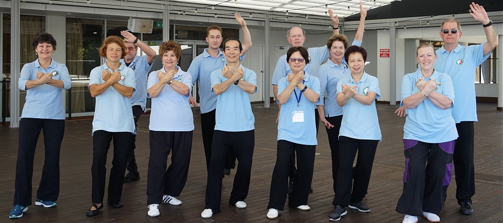
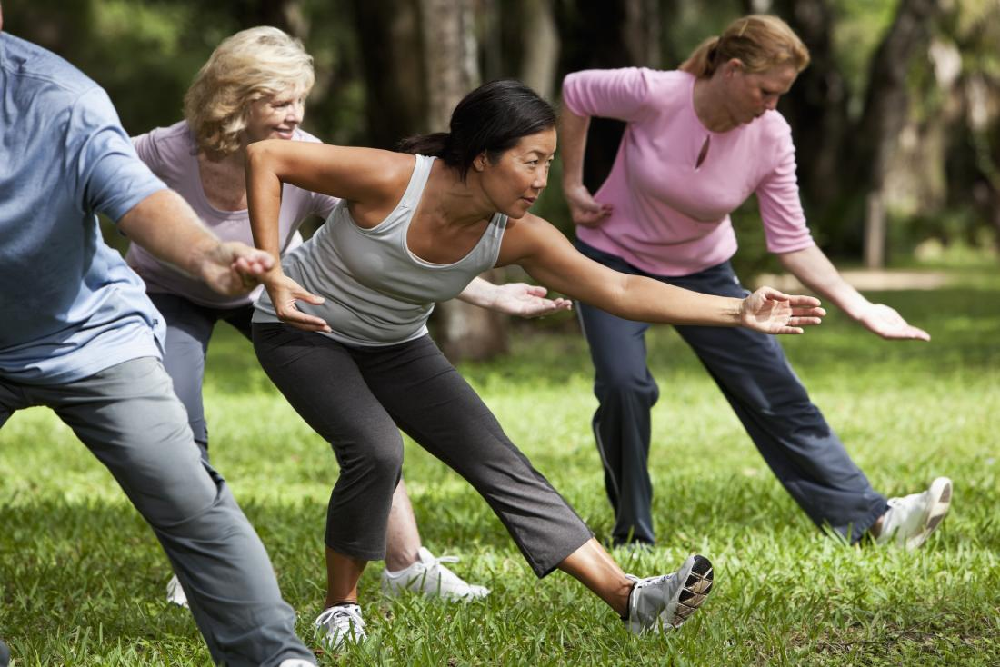

- What is Tai Chi?
-
An art embracing the mind, body and spirit - Originating in ancient
China, tai chi is one of the most effective exercises for health of
mind and body. Although an art with great depth of knowledge and
skill, it can be easy to learn and soon delivers its health benefits.
For many, it continues as a lifetime journey.

There are many styles and forms of tai chi, the major ones being Chen,
Yang, Wu, Wu (different words in Chinese) and Sun. Each style has its
own features, but all styles share the same essential principles.
The essential principles include mind integrated with the body; control
of movements and breathing; generating internal energy, mindfulness,
song (loosening) and jing (serenity). The ultimate purpose of tai chi is
cultivate the qi or life energy within us to flow smoothly and
powerfully throughout the body. Total harmony of the inner and outer
self comes from the integration of mind and body, empowered through
healthy qi through the practice of tai chi. Tai Chi for Health programs
are modernized tai chi incorporating medical science to deliver health
benefits more quickly.

Just what is Tai Chi?
There is much more to tai chi than one can see, and virtually no one can
describe such a complex art in one simple sentence. Yes, it's
aesthetically pleasing, easy and enjoyable to practice. It can be a
meditation and an integral exercise for all parts of the body and the
mind. It brings tranquility and helps you think more clearly. Tai chi
can be many things for different people; regular practice will bring
better health and wellness.
The flowing movements of tai chi contain much inner strength, like water
flowing in a river, beneath the tranquil surface there is a current with
immense power-the power for healing and wellness. With consistent
practice, people will be able to feel the internal energy (qi), convert
it to internal force (jing) and use it to generate more internal energy.
This process would greatly enhance tai chi development, leading to a
more balanced mental state; at the same time your fitness, agility and
balance will improve. The unique feature of tai chi is that it is
internal. Internal means building the inner strength from inside out,
therefore you can continue to develop at any age.
Numerous studies have shown tai chi improves muscular strength,
flexibility, fitness, improve immunity, relieve pain and improve quality
of life. Muscle strength is important for supporting and protecting
joints and is essential for normal physical function. Flexibility
exercises enable people to move more easily, and facilitate circulation
of body fluid and blood, which enhance healing. Fitness is important for
overall functioning of the heart, lungs, and muscles. In addition to
these components, tai chi movements emphasize weight transference to
improve balance and prevent falls.
Aside from the health benefits, tai chi runs deep and strong. It's easy
to learn and becomes a way of life for many practitioners. Yet, because
of its depth, no one ever knows it all, and thereby lies the fascination
and the never-ending challenge of the art. There will be times, no
matter how brief, when a practitioner will enter a mental stage of
tranquillity, moving to a different world, time, and space, a world
where there is no schedule, no hustle and bustle. Yet the person still
feels very much a part of the world. In a non-religious sense, it's a
spiritual experience. Such an experience is so satisfying that it is
beyond words. Being part of the world, being in harmony with the world
and nature, thus is the paradox of tai chi, health and beyond.